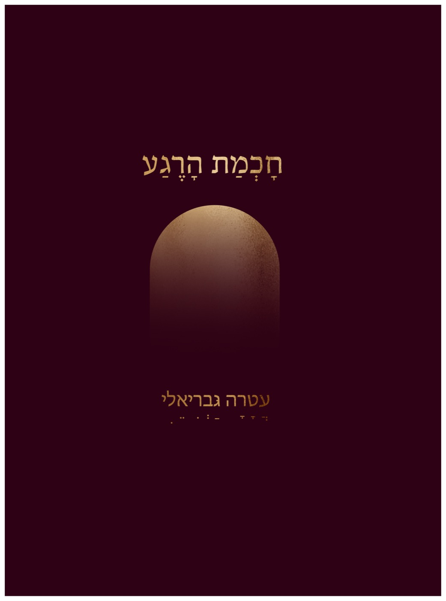

סדנאות והרצאות
מפגשים קבוצתיים לתרגול חי של הקשבה, נוכחות וחיבור לשפה הפנימית של הרגע.
לפרטיםחכמת הרגע היא שפה להבנת מערכת ההפעלה של החיים — שפה שנולדה מתוך הקשבה לכאן ועכשיו, להווייה הקיימת בתוכנו גם כשאיננו שמים לב אליה.
עטרה גבריאלי היא מייסדת מכון חכמת הרגע ומחברת הספר "חכמת הרגע". דרך הכתיבה, ההוראה והליווי האישי היא מזמינה כל אחת ואחד לגלות מחדש את השפה הפנימית של הנוכחות — ללמוד להקשיב לרגע כפי שהוא, ולגלות בתוכו את החיות שמחכה להתגלות.
העבודה שלה שואבת מתוך אמון עמוק: שיש בכל אחד מאיתנו מערכת פנימית שיודעת את הקצב המדויק, ואינה זקוקה לקביים חיצוניים כדי לפעול.
עַד פִּסְגוֹת הֶהָרִים הִגַּעְתִּי
לִלְמֹד אֶת שְׂפַת הַתְּהוֹם
עַד קְצֵה הַחוֹפִים הָלַכְתִּי
לִלְמֹד אֶת שְׂפַת הַיָּם
ראשי התיבות של המילה "רגע" הם "ריח גן עדן". חוש הריח הוא החוש היחיד שלא נפגם — ולכן הוא הנאמן ביותר: הוא לא זקוק להוכחות, הוא פשוט יודע. כך גם הרגע: יחידת הזמן שלא נפגמה, זו שיכולה להחזיר אותנו, בכל פעם מחדש, אל אותה תחושה של חיבור וחיות.
"הרגע הוא ריח גן עדן. הוא אינו גן עדן — אבל הוא השובל שלו."

חכמת הרגע היא שפה להבנת מערכת ההפעלה של החיים. היא נולדה מתוך הקשבה לכאן ועכשיו, להווייתנו הקיימת מבלי שנשים לב אליה.
לפרטים על הספרמוזמנות ומוזמנים ליצור קשר לכל שאלה, השראה או רצון להעמיק.
atara30@gmail.com